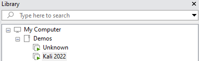
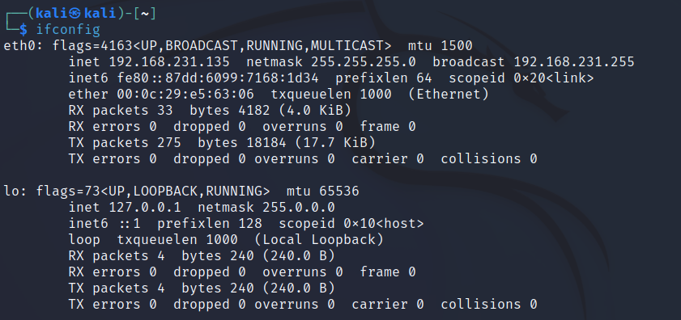
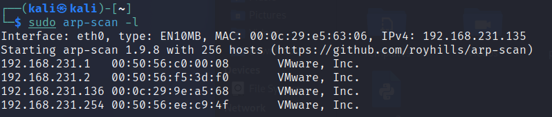
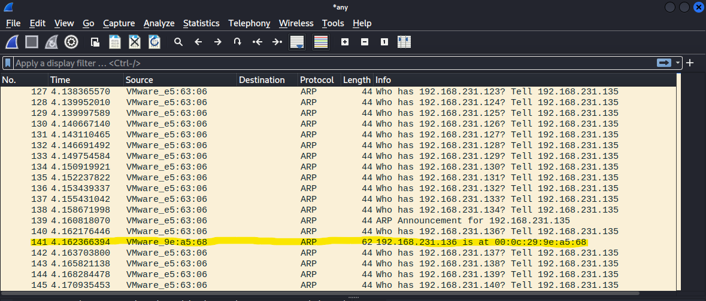
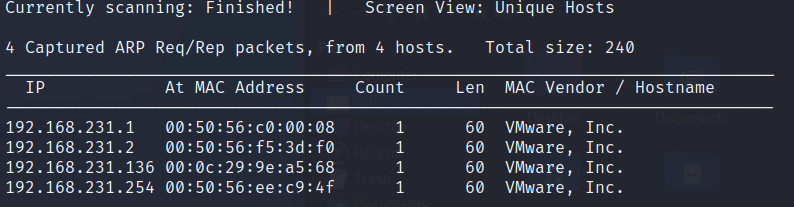
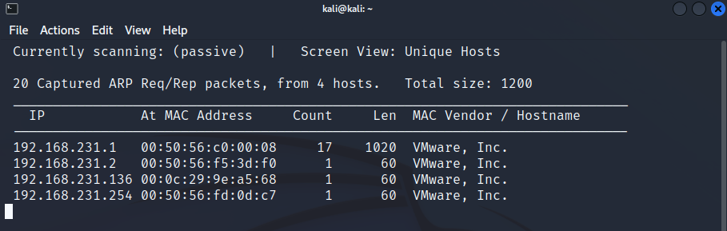
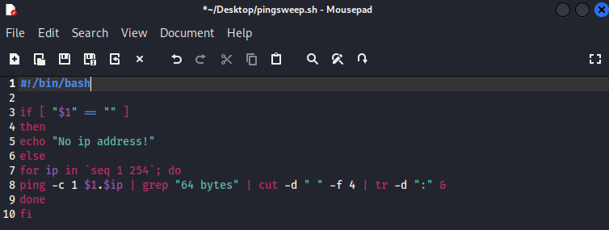
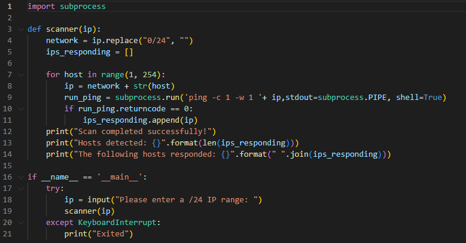
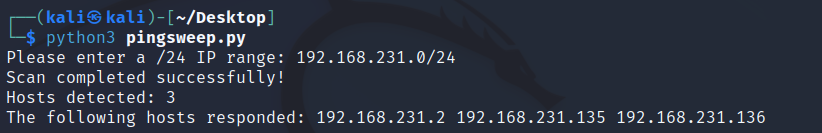

Local Host Discovery
Lab setup
- I am using VMware with 2 Virtual Machines. I am trying to locate the IP address of the 'Unknown' machine.

- My Kali Linux machine is at 192.168.231.135.

Method 1: ARP Scan
This tool comes packaged with Kali Linux and can be used to send an ARP request to every IP address on the given subnet. It run using the following command:sudo arp-scan -l
As you can probably guess, this is scanning the LOCAL net (-l flag) by sending out an ARP request to every IP address within the subnet. These can be seen in Wireshark:

The tool indicates the response (ignore .1, .2 & .254 as these are VMware controllers):
At this stage we could be reasonably sure that 192.168.231.136 is the Unknown machines IP address.
Method 2: Netdiscover
This tool also comes packaged with Kali Linux and can be used to send an ARP request to every IP address on the given subnet. It run using the following command:sudo netdiscover -r 192.168.231.0/24Netdiscover will also attempt to locate machines by sending out ARP requests; presenting replies in the following table:

What I particularly like about this tool is its ability to passive scan meaning it will simply sit there and sniff traffic presenting results in a live window as shown here:

Method 3: Scripting
Sometimes all tools will fail, or more than likely won't always be available to us depending on what machine we land on (unfortunately, not all networks have a nice Kali Linux machine for us to use!) so we need to manually locate hosts. Arguably one of the best ways to do this is using Internet Control Message Protocol (ICMP) through the PING application.The following script takes in one parameter ($1) from the user; the first 3 octets of the /24 IP address i.e. 192.168.231 and then appends 1 to 254 in a loop running the PING command against each address.
We take the 64 byte matches (which is a ping response from a Linux machine, Windows would be 32 bytes so you would need to amend the script) cut out what we don't want and delete the trailing ':' to clean up the results.
#!/bin/bash
if [ "$1" == "" ]
then
echo "No ip address!"
else
for ip in `seq 1 254`; do
ping -c 1 $1.$ip | grep "64 bytes" | cut -d " " -f 4 | tr -d ":" &
done
fi
I used Mousepad, but any text editor will work. Save as pingsweep.sh and do not forget to make the file executable.

Execute the script and await results. Something to bear in mind at this point, if the target machine has been set to not respond to PING we could miss a result.
In this example, disregard .1 and our own IP .135. We can be confident there is something at .136 as it responded to a PING request.
Method 4: Creating your own tool
Host discovery can be done with numerous programming languages, Python being one. You can create a simple PING scanner in as little as 20 lines. As an example I have provided the following script. When run it will ask a user for a IP/24 i.e. 192.168.231.0/24. Its first action is to replace the 0/24 (as we can't ping this!) with nothing. The FOR LOOP will then cycle through all values from 1 to 254 pinging each 1 time with a reply wait time of 1 second (better to increase the wait time in reality as machines will usually take a little longer to respond depending on network dynamics, I just wanted quick results for this demo).
Any IPs that respond to the ping (returncode 0) are appended to a list (ips_responding). At the end of the run, the results are printed to the screen. First the number of hosts that responded (bear in mind one of these is ours) is displayed, followed by the IPs on the hosts themselves. The complete output resembles the following:

A final point to note, there are hundreds of tools out there to perform host discovery tasks, its always good to have one of each type in your arsenal. Please report any errors to the address below.